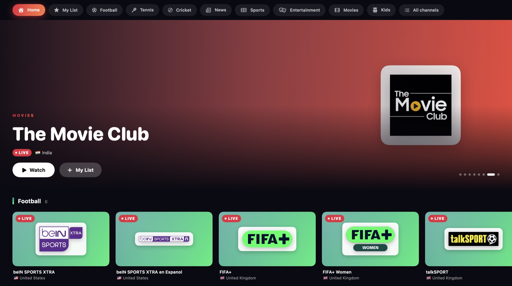

Free live TV, beautifully organised.
Kaleido TV gathers legitimate free channels (sport, news, movies, entertainment and kids) into one colourful player. It checks which ones are working before you click, and keeps pirate streams out.

Every kind of channel, in its own colour
Channels arrive sorted into categories, with the working ones first. Counts are for the default twelve countries; switch on worldwide for the rest.
Made for actually watching
Free channel lists are full of dead links and dodgy copies. Kaleido TV does the tedious part for you.
Checks every channel
Before you click, each stream has already been tested, including a real piece of video, so channels blocked in your country show as offline too. Live ones come first.
Reconnects by itself
If the picture stops, it reconnects, then switches to a backup stream, and keeps trying for three minutes before giving up. You don't have to do anything.
Keeps pirate streams out
Pay-TV brands, restream hosts and bare IP addresses are filtered out, and sport, film and kids channels must come from the platforms official free channels use.
Bring your own service
Already pay for an IPTV service? Add its playlist or Xtream login. It's stored encrypted on your device and only ever sent to your provider.
Your countries, or the world
Starts with the UK, US, South Asia, Australia and the Gulf. One switch adds free channels from 122 countries, each with its flag.
Private by design
No accounts, no analytics, no ads added. It only talks to the public channel list, the streams you watch, and any service you add.
Honest about what's free
Big leagues and new films sell their rights to paid services. Here's what you'll really find.
Sport
FIFA+, Tennis Channel, beIN SPORTS XTRA, talkSPORT, DD Sports, MLB, NFL and PGA Tour channels.
Classic matches, magazine shows and some live lower-profile events.
No live Premier League, Champions League, Grand Slams or IPL.
News
Hundreds of 24/7 channels: BBC News, Al Jazeera, CNBC, ABC News, and Indian, Pakistani, Bangladeshi and Gulf news.
The strongest category by far.
Movies
24/7 film channels such as GREAT! movies, MovieSphere, Hallmark Movies & More and Cine Sony.
Mostly catalogue and classic films, with the channels' own ads.
No new releases, and you can't pick a film.
Entertainment
Single-show and themed channels: Top Gear, Hell's Kitchen, Mythbusters, Doctor Who Classic, game shows.
Many are US-only, so about half work from elsewhere.
Kids
CBeebies and CBBC (UK only), PBS Kids, Moonbug, Teletubbies, Lego and Sonic channels.
Disney, Nickelodeon and Cartoon Network are paid channels, so they aren't included.
Get Kaleido TV
Free, with nothing to sign up for. It isn't on the App Store (yet), so you build it with Xcode, which takes a couple of minutes.
Mac
macOS 14 Sonoma or later, with Xcode (free)
- Download the source code.
- In Terminal, run
./build-mac.shin its folder. - Kaleido TV appears in your Applications folder. No Apple ID needed.
iPhone and iPad
iOS 17 or later, a Mac with Xcode, and a free Apple ID
- Open the project in Xcode.
- Choose your Apple ID under Signing.
- Plug in your iPhone and press Run.
Questions
Is this legal?
Kaleido TV is a player. It shows channels that broadcasters and free ad-supported services publish openly, using the public iptv-org channel list, and it filters out streams that look like pirate copies of pay channels. It's a careful filter, not a legal guarantee, and what you may watch can depend on where you live: watching live BBC channels, for example, needs a UK TV licence.
Why can't I watch the Premier League, IPL or Wimbledon?
Those rights are sold to paid services or to broadcasters' own apps, so they aren't free to stream. Kaleido TV won't show copies of them. If you already pay for a service that gives you a playlist or Xtream login, you can add it.
Does it cost anything, or show ads?
The app is free and open source, and adds no ads of its own. Many free channels are funded by ads, though, and those play as part of the channel, just like on TV.
What does it collect about me?
Nothing. There's no account, analytics or telemetry. Your favourites and settings stay on your device, and any paid-service login is stored encrypted there too.
Can I choose a film to watch on demand?
Not from the free channels: the movie channels run 24/7 like TV stations. On-demand films need a service that holds the rights.